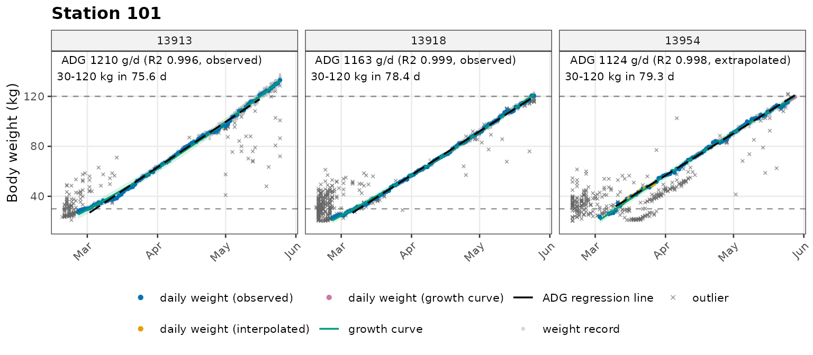

本文按处理顺序说明 tidypptsda 的每一步用的是什么方法、方法出自哪里，以及每一步的结果保存在哪里。每个参数的具体含义和调整建议见《质控参数详解》，各种方法在自己数据上的准确性怎么检验见《方法验证》。
| 步骤 | 函数 | 做什么 | 方法来源 |
|---|---|---|---|
| 1 | prep_visits() |
统一 NEDAP / FIRE 的字段，识别转栏、误读 | 本包 |
| 2 | clean_weight() |
体重范围 → 适应期 → 逐日回溯追踪 → rlm + LOESS 异常值检测 → 个体判定 | Jiao 等（2014）；Cleveland（1979）；追踪为本包方法 |
| 3 | calc_adg() |
生长曲线确定区间起止 → 补齐区间内每天的体重 → 回归斜率即 ADG | 补齐方法与国家测定规程一致 |
| 4 | flag_feed_errors() |
每次访问按 16 条规则判断采食错误 | Casey 等（2005） |
| 5 | calc_adfi() |
混合模型校正日采食 → 补齐区间内每天的采食 → ADFI | Jiao 等（2014）；补齐方法与国家测定规程一致 |
| 6 | calc_fcr() |
FCR = ADFI ÷ ADG，可信度标记，10 kg 分段检查 | 本包 |
run_pipeline() 按这个顺序一次跑完。所有步骤用同一个
stage_range（默认 30–120 kg），所以 ADG、ADFI 和 FCR
都是在同一段体重、同一批日子上算的。
clean_weight()
按下面的顺序处理，每条记录被剔除的原因写在
records$qc_flag 中。
weight_range（15–150
kg）内的剔除（"weight_range"）。adapt_days（7）天内的体重不用（"adaptation"）。进站初期猪还不熟悉测定站，又常有几头小猪同时上秤。weight_track，本包方法）：测定站只有猪四条腿都站上秤才称重，读数偏轻的情况很少；偏重的读数则来自几头小猪同时上秤，测定后期猪大了，秤上只容得下一头，读数最可靠。所以从测定末期出发，按日增重逐日往前推，只保留与推算体重相差不超过
8%（至少 2 kg）的读数（"track"）。MASS::rlm，bisquare
权重），权重 < 0.5 的记录为异常（"rlm"）。"loess"）。LOESS
能贴住生长中途的停滞和起伏，弥补二次曲线的不足。weight_outlier。默认 4、5
两种方法任一判为异常即为异常（outlier_combine = "any"）。
个体判定用的是剔除异常值之后的有效记录：
| 规则 | 默认 | 不满足时 |
|---|---|---|
| 有效记录数 | ≥ 20 条 | 剔除 |
| 测定期 | ≥ 35 天 | 剔除 |
| 缺失率（测定期内没有有效体重的天数占比） | ≤ 30% | 剔除 |
| 进站体重 | ≤ 65 kg | 降级 |
| 出栏体重 | ≥ 85 kg | 降级 |
| 追踪剔除的记录 | ≤ 40% | 降级（可能是称重异常，如体重传感器故障） |
| 有效体重对 LOESS 平滑曲线的 R² | ≥ 0.99 | 降级 |
进站、出栏体重取 LOESS
平滑曲线在首末记录处的值。降级的猪照常计算，只在结果中标为
low_confidence。
v <- prep_visits(nedap, verbose = 0)
w <- clean_weight(v, verbose = 0)
w$records[, .N, by = qc_flag][order(-N)]
#> qc_flag N
#> <char> <int>
#> 1: 25805
#> 2: adaptation 3404
#> 3: track 1543
#> 4: rlm;loess 328
#> 5: rlm 310
#> 6: loess 82calc_adg()
curve_model，默认二次曲线
poly2，可选
poly1、poly3、gompertz）拟合每头猪的有效记录。曲线第一次到达区间上限的时间为区间终点；终点之前、曲线最后一次从下方越过区间下限的时间为起点。source = "observed"）；"interpolated"）；"curve"）。r_squared。
a <- calc_adg(w, verbose = 0)
a$per_pig[1:5, .(responder, adg = round(adg), r_squared = round(r_squared, 4),
n_observed_days, n_interpolated_days, n_curve_days)]
#> responder adg r_squared n_observed_days n_interpolated_days n_curve_days
#> <char> <num> <num> <int> <int> <int>
#> 1: 13913 1210 0.9963 76 0 0
#> 2: 13918 1163 0.9989 80 0 0
#> 3: 13954 1124 0.9981 69 8 3
#> 4: 13996 1335 0.9968 70 0 0
#> 5: 14962 1279 0.9973 72 0 0plot_adg()
的图中，三种来源的日体重用不同颜色的点表示，绿色曲线是生长曲线，黑色虚线是回归线，它的斜率就是
ADG：

flag_feed_errors()、calc_adfi()
无错误日采食 ~ 站 + 品种 + 体重 + ADG + 31 个错误协变量 + (1|猪)，校正值
= 无错误日采食 − Σ(系数 ×
错误协变量)。没有错误的日子保持原值。模型中的体重是上一步补齐后的日体重。dfi_range（0–6 kg）的日子视为缺失。calc_adfi()
区间内没有可用采食的日子，默认（impute_method = "loess_lm"）这样补齐：
| 缺失位置 | 填充方法 | 日子状态 |
|---|---|---|
| 两个有记录的日子之间，连续缺失 ≤ 3 天 | 稳健 LOESS 平滑插补（日采食对日期） | iii |
| 两个有记录的日子之间，连续缺失 > 3 天 | 线性回归 日采食 ~ 体重
|
iii |
| 首个有记录日之前、末个有记录日之后 | 线性回归 日采食 ~ 体重
|
elrp |
回归中的体重是补齐后的日体重，每头猪单独拟合。这套规则与国家测定规程中日采食缺失的处理方法相同。impute_method = "linear"
时，中间一律线性插值，两端仍用回归。
ADFI = 区间内全部日子（实测、校正、填充）日采食量的平均值。
calc_fcr()
FCR = ADFI ÷
ADG，两者都在同一个区间、同一批日子上计算。下面的情况把
fcr_flag 标为 low_confidence，原因写在
fcr_note 中：
max_edge_extrap_days）；min_coverage）；min_bin_coverage_kg）；bin_fcr_limits；clean_weight()
降级。
f <- calc_adfi(v, a, verbose = 0)
r <- calc_fcr(a, f, verbose = 0)
r$per_pig[1:5, .(responder, adg = round(adg), adfi = round(adfi), fcr = round(fcr, 2), fcr_flag)]
#> responder adg adfi fcr fcr_flag
#> <char> <num> <num> <num> <char>
#> 1: 13913 1210 2643 2.18 ok
#> 2: 13918 1163 2566 2.21 ok
#> 3: 13954 1124 2681 2.39 low_confidence
#> 4: 13996 1335 2860 2.14 ok
#> 5: 14962 1279 2831 2.21 ok默认方法之外，各步都有可选的方法：
| 步骤 | 默认 | 可选 | 怎么检验 |
|---|---|---|---|
| 体重异常检测 | 追踪 + rlm + LOESS | STL、SD，或去掉追踪 | validate_outliers() |
| 区间两端的体重 | 二次曲线 | 直线、三次曲线、Gompertz |
validate_weight_fill()、validate_adg()
|
| 区间中间的体重 | 线性插值 | 改用生长曲线（只在验证中比较） | validate_weight_fill() |
| 采食填充 | LOESS（≤ 3 天）+ 体重回归 | 线性插值 + 体重回归 | validate_adfi() |
建议每个新的测定站或新的批次先做一次验证，确定之后同一个育种群体固定使用同一套设置，否则年度之间的差异可能来自方法而不是猪。